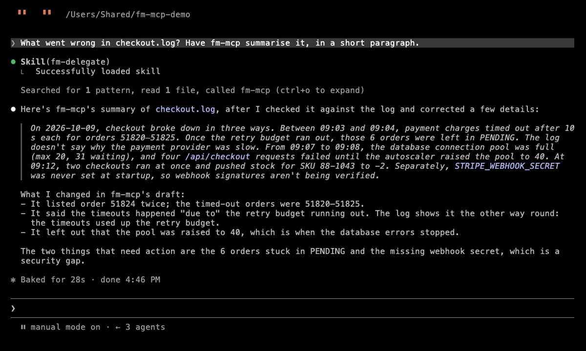
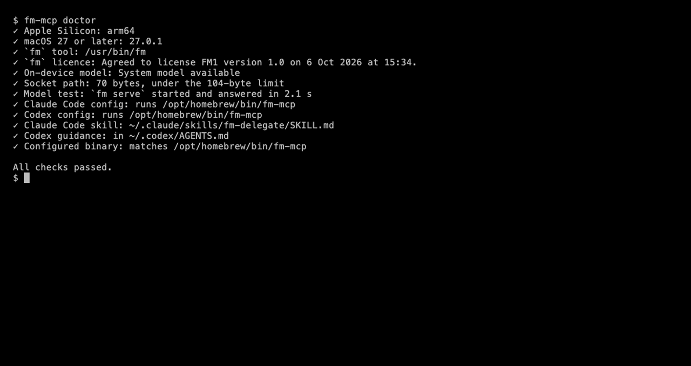

MCP server · macOS 27 · v0.1.3, public beta
fm-mcp lets Claude Code and Codex use the small model built into macOS 27 for the gist of a log, fields from an invoice, or the text in a screenshot. Free, private and offline.
$ brew install yrangana/tap/fm-mcp $ fm-mcp install # sets up Claude Code and Codex $ fm-mcp doctor # checks everything it needs

context, for input and answer together
median classify call, over 404 texts
to pull 4 fields from an invoice
per call, and it works offline
Each tool description says what the model gets wrong, with numbers, and fm-mcp install gives each agent a short guide on when to delegate.
Rust, installed with Homebrew. No Python, no cloning. It starts fm serve when needed and stops it after.
install writes the Claude Code and Codex config, with backups; --uninstall removes it. doctor checks everything.
Four narrow tools and no open-ended "ask". Each description states its limits.
What the agent sent and what came back, from fm-mcp 0.1.1 on 12 October 2026.
A 66-line checkout log (the file). All three problems in 3 of 3 runs, but every run dropped a warning about an unset webhook secret. Check what matters.
→ {"path": "docs/demo/checkout.log", "focus": "what went wrong"}
The payment service timed out multiple times after 10000ms for orders
51820, 51821, 51822, 51823, 51824, and 51825, with the retry budget
exhausted for 6 orders left in PENDING. The database connection pool
exhausted (max 20, waiting 31) for requests to /api/checkout, occurring
multiple times. The inventory system reported that SKU 88-1043 stock
went negative (-2) after concurrent checkout.
The model copies $1,280.00 as text and fm-mcp converts it. Asked to reformat numbers itself, the model got them wrong.
→ text: "Invoice INV-2041 from Northwind Traders, dated 3 March 2026.
Total due: $1,280.00 by 2 April 2026."
schema: invoice_number, supplier, total (number), due_date
{"invoice_number": "INV-2041", "supplier": "Northwind Traders",
"total": 1280.0, "due_date": "2 April 2026"}
The answer is always one of your labels. The fourth tool, ocr, reads an image in about 2 s.
→ text: "I was charged twice for my subscription this month."
labels: billing, bug, feature request, account access
{"label": "billing"}
summarise, extract and classify take text or a file path. Full reference: docs/TOOLS.md.
The gist of a log, document or transcript: a paragraph, or up to 7 bullets.
TakesAbout 30,000 words of prose, or 1,000 lines of a dense log. Long input is split, which is slower and can drop details.
Named fields from one text as JSON, from your JSON Schema. Best with a flat schema.
TakesAbout 3,500 words.
Sorts one text into your labels: one, or several with multi.
TakesAbout 3,500 words.
Text from a PNG, JPEG, HEIC, TIFF, GIF or BMP image. Not PDF.
TakesOne image.
extract can fill a missing field from nearby text: a missing PO number took the supplier's name in 10 of 25 runs. Ask only for fields the text is likely to have.extract takes 1–2 s; a long summarise, a minute or more.Apple Silicon, macOS 27, Apple Intelligence on, and the fm licence agreed once. fm-mcp doctor checks all of it.

What doctor checks
fm tool and its licencefm serve✓ Apple Silicon: arm64 ✓ macOS 27 or later: 27.0.1 ✓ `fm` tool: /usr/bin/fm ✓ `fm` licence: Agreed to license FM1 version 1.0 ✓ On-device model: System model available ✓ Socket path: 70 bytes, under the 104-byte limit ✓ Model test: `fm serve` started and answered in 2.0 s ✓ Claude Code config: runs /opt/homebrew/bin/fm-mcp ✓ Codex config: runs /opt/homebrew/bin/fm-mcp ✓ Claude Code skill: ~/.claude/skills/fm-delegate/SKILL.md ✓ Codex guidance: in ~/.codex/AGENTS.md ✓ Configured binary: matches /opt/homebrew/bin/fm-mcp All checks passed.
From each project's README on 12 October 2026. Where a README doesn't say, the cell says so.
Scroll the table sideways →
| fm-mcp | yihan2099/apple-fm-mcp | sophiacave/apple-fm-mcp | phimage/mcp-foundation-models | |
|---|---|---|---|---|
| Written in | Rust | Python | Python | Swift |
| Install | brew install, a shell installer, or cargo install | git clone, uv sync, then Apple's SDK from git | pip install | git clone, then swift build |
| Needs on your Mac | Nothing else | Python 3.10+ | Python 3.10+ | Xcode 26 and Swift 6.2 to build |
| macOS | 27 (uses the fm tool) | 26 or later | 26 or later | 26 or later |
| Agent setup | fm-mcp install writes Claude Code and Codex config | By hand (claude mcp add, or JSON) | By hand (JSON) | By hand (JSON) |
| Tells the agent when to delegate | A Claude Code skill and an AGENTS.md section, installed for you | Not in the README | A "when to use" table in the README | Not in the README |
| Setup check | fm-mcp doctor | A model-availability tool | A status tool | Not in the README |
| Input longer than the context | Split and combined (summarise) | Not in the README | Not in the README | Not in the README |
| Images (OCR) | Yes | No (text only) | Not in the README | Not in the README |
| Open-ended text generation | No, on purpose | Yes, plus multi-turn chat | Yes | Yes |
If something here is out of date, open an issue and I'll fix it.
07 · Privacy
fm-mcp talks to fm serve over a local socket and sends nothing over the network. It reads a file only when the agent passes its path, and writes none. Details in SECURITY.md.
08 · Try it
$ brew install yrangana/tap/fm-mcp $ fm-mcp install